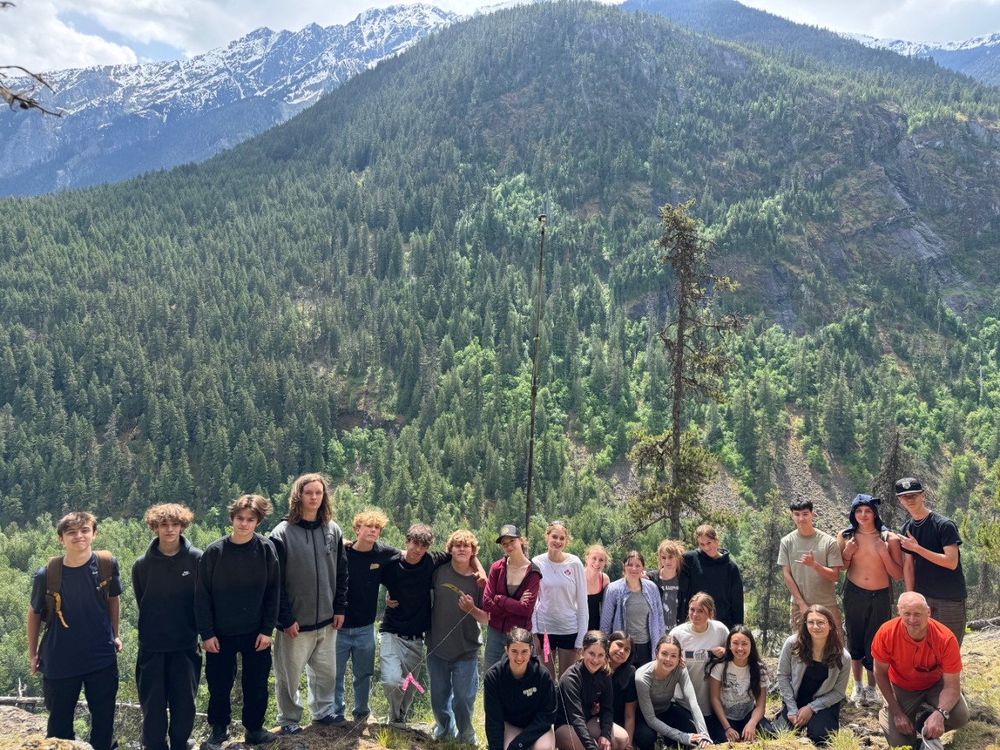
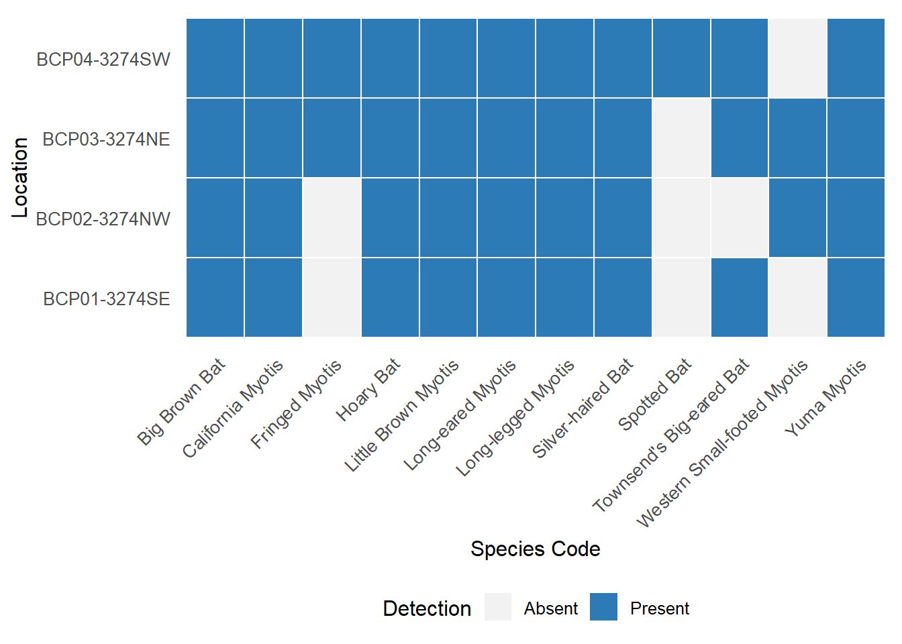

Land Acknowledgement
Biodiversity Pathways respectfully acknowledges that our work takes place on Treaty 8 and Douglas Treaties Territories as well as the traditional and unceded territories of First Nations and Métis Peoples across all regions of British Columbia, whose histories, languages, and cultures are deeply connected to the biodiversity we monitor. We acknowledge the traditional teachings of the lands that we work on, and that reciprocal, meaningful, and respectful relationships with Indigenous peoples make our work possible. We are deeply grateful for their stewardship of these lands, and we are committed to supporting Indigenous-led monitoring programs, while learning Indigenous ways of knowing, being, and doing.
Introduction

Overview of NABat and the NNW Bat Hub
The North American Bat Monitoring Program (NABat) is a large-scale coordinated effort to monitor bat species across North America using standardized protocols and a unified sample design (Loeb et al. 2015). NABat was established to address the gaps in knowledge and lack of long-term studies of bat species across Mexico, USA, and Canada. The program is administered by the US Geological Survey (USGS), and implemented by the North by Northwest Bat (NNW) Hub in British Columbia, Alberta, and S.E. Alaska.
2025 NABat Monitoring in Pemberton
In the field season of 2025, 4 bat acoustic deployments were made at the Pemberton grid cell (GRTS ID: 143274). The monitoring stations collected data between 2025-05-31 and 2025-06-11. The recordings were submitted to the North by Northwest (NNW) Bat Hub for processing and inclusion in the provincial annual report on the state of bat populations within British Columbia.
Methods
Field Deployments
In 2025, grid leaders and volunteers deployed 4 recording units in the Pemberton grid cell (Figure 1) following the standards set by NABat and the North by Northwest (NNW) Bat Hub (Reichert et al. 2018). All of these locations were established sites that have been monitored for 6 continuous years starting in 2019. In 2025 the recording units collected data for a total of 45 ARU nights. ARU nights quantify the total acoustic sampling effort by summing the number of nights each ARU was deployed and recording. This metric accounts for all individual recorder deployments, such that two ARUs recording for seven nights would equal 14 ARU nights total, even if deployed concurrently.
Data processing
Full-spectrum recordings from the sampling periods were collected and processed using two automatic classifiers: Kaleidoscope’s Bats of North America 5.4.0 classifier and Sonobat 3.0’s northeastern British Columbia classifier. Manual verification is currently underway, and results can be shared upon request.
Results and Discussion
Preliminary results show that the highest bat species diversity was detected in the SW and NE quadrants of the Pemberton grid, with 11 different species recorded at each location (Figure 2). The Spotted Bat (Euderma maculatum) was detected only in the SW quadrant. Both the Hoary Bat (Lasiurus cinereus) and the Silver-haired Bat (Lasionycteris noctivagans) were detected across all sites. These two species have been recognized as endangered by COSEWIC (Status of Endangered Wildlife in Canada 2023) and are expected to be listed under Canada’s Species at Risk Act (SARA). The Little Brown Myotis (Myotis lucifugus), already listed under SARA, was also detected across all sites. The presence of these at-risk species indicates that this grid and region may be important for bat conservation and recovery efforts.

Literature Cited
CWHC-RCSF. 2024. “Canadian Wildlife Health Cooperative - Réseau Canadien Pour La Santé de La Faune.” 2024. https://www.cwhc-rcsf.ca/white_nose_syndrome_reports_and_maps.php.
Energy and Climate Solutions, Ministry of. 2024. “BC Gov News.” December 9, 2024. https://news.gov.bc.ca/releases/2024ECS0048-001643.
Friedenberg, Nicholas A., and Winifred F. Frick. 2021. “Assessing Fatality Minimization for Hoary Bats Amid Continued Wind Energy Development.” Biological Conservation 262 (October): 109309. https://doi.org/10.1016/j.biocon.2021.109309.
Loeb, Susan C., Thomas J. Rodhouse, Laura E. Ellison, Cori L. Lausen, Jonathan D. Reichard, Kathryn M. Irvine, Thomas E. Ingersoll, et al. 2015. “A Plan for the North American Bat Monitoring Program (NABat).” SRS-GTR-208. Asheville, NC: U.S. Department of Agriculture, Forest Service, Southern Research Station. https://doi.org/10.2737/SRS-GTR-208.
Olson, Cory. n.d. “Bat Profiles.” Alberta Community Bat Program. Accessed March 6, 2025. https://www.albertabats.ca/batprofiles/.
Rae, Jason, and Cori L Lausen. 2022. “North American Bat Monitoring Program in British Columbia: 2021 Data Summary and Activity Trend Analyses (2016-2021).” Wildlife Conservation Society of Canada.
———. 2024. “North American Bat Monitoring Program in British Columbia: 2023 Data Summary and Activity Trend Analyses (2016-2023).” Wildlife Conservation Society of Canada.
Reichert, Brian, Cori Lausen, Susan Loeb, Theodore J. Weller, Ryan Allen, Eric Britzke, Tara Hohoff, et al. 2018. “A Guide to Processing Bat Acoustic Data for the North American Bat Monitoring Program (NABat).” Open-File 2018–1068. U.S. Geological Survey.
Slough, Brian, Cori Lausen, Brian Paterson, Ingebjorg Hansen, Julie Thomas, Piia Kukka, Thomas Jung, Jason Rae, and Debbie Wetering. 2022. “New Records about the Diversity, Distribution, and Seasonal Activity Patterns by Bats in Yukon and Northwestern British Columbia.” Northwestern Naturalist 103 (August): 162–82. https://doi.org/10.1898/NWN21-10.
Solick, Donald. 2022. “Bat Acoustic Species-Pair Matrix Western US/Canada.” 2022. https://www.batacousticsurveys.com/_files/ugd/a1e0ca_0ed9c3172b9145e49c50eb7a7712f909.pdf.
Status of Endangered Wildlife in Canada, Committee on the. 2023. “Hoary Bat (Lasiurus Cinereus) Eastern Red Bat (Lasiurus Borealis) Silver-haired Bat (Lasionycteris Noctivagans): COSEWIC Assessment and Status Report 2023.” 2023. https://www.canada.ca/en/environment-climate-change/services/species-risk-public-registry/cosewic-assessments-status-reports/hoary-bat-eastern-red-bat-silver-haired-bat-2023.html.
Stratton, Christian, Kathryn M. Irvine, Katharine M. Banner, Wilson J. Wright, Cori Lausen, and Jason Rae. 2022. “Coupling Validation Effort with in Situ Bioacoustic Data Improves Estimating Relative Activity and Occupancy for Multiple Species with Cross‐species Misclassifications.” Methods in Ecology and Evolution 13 (6): 1288–1303. https://doi.org/10.1111/2041-210X.13831.
Szewczak, Joe. 2018. “Acoustic Features of Western US Bats.” Humboldt State University Bat Lab.
USFWS, U. S. Fish and Widlife Service. 2025. “White-Nose Syndrome.” 2025. https://www.whitenosesyndrome.org/.
Zimmerling, J. Ryan, and Charles M. Francis. 2016. “Bat Mortality Due to Wind Turbines in Canada.” The Journal of Wildlife Management 80 (8): 1360–69. https://doi.org/10.1002/jwmg.21128.